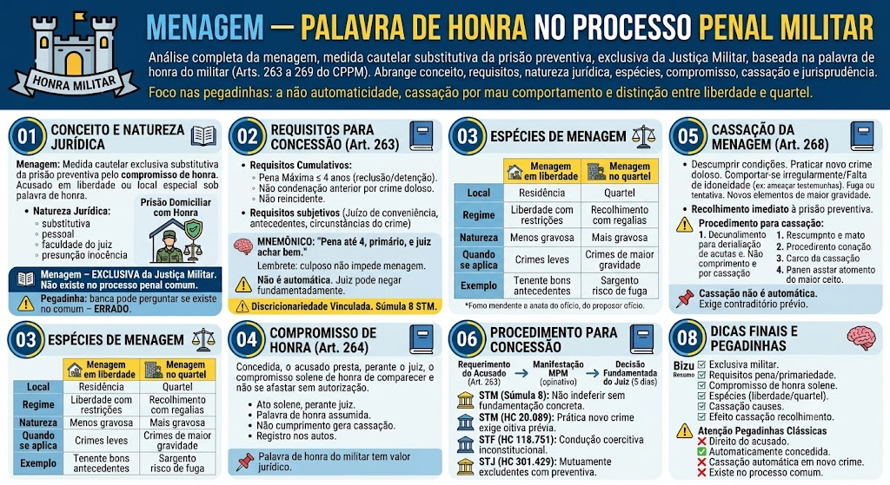

O que é a menagem?
O que é a menagem?
A menagem é uma medida cautelar exclusiva do processo penal militar, que substitui a prisão preventiva pelo compromisso de honra do militar. O acusado fica em liberdade (ou em local especial) sob sua palavra de honra, confiando-se na sua conduta e na sua idoneidade.
Natureza jurídica:
- É uma medida cautelar substitutiva da prisão preventiva;
- Tem caráter pessoal e intuitu personae (depende da confiança no acusado);
- É uma faculdade do juiz, não um direito do acusado;
- Baseia-se no princípio da presunção de inocência e na confiança na honra do militar.
📖 Analogia: A menagem é como uma \"prisão domiciliar com honra\" – o militar promete, sob sua palavra, que não fugirá e cumprirá as obrigações.
Situação prática
Situação prática
Um tenente é acusado de crime com pena máxima de 3 anos, não tem condenações anteriores e possui bons antecedentes. O juiz concede a menagem, permitindo que ele aguarde o julgamento em sua residência, desde que compareça a todos os atos do processo e não se ausente sem autorização.
Menagem – EXCLUSIVA da Justiça Militar
Menagem – EXCLUSIVA da Justiça Militar
A menagem é uma medida cautelar exclusiva do processo penal militar, que substitui a prisão preventiva pelo compromisso de honra do militar. O acusado fica em liberdade (ou em local especial) sob sua palavra de honra, confiando-se na sua conduta e na sua idoneidade.
Não existe menagem no processo penal comum (CPP).
⚠️ Pegadinha: A banca pode perguntar se a menagem existe no processo penal comum – ERRADO. É exclusiva da Justiça Militar.
Requisitos cumulativos
Requisitos cumulativos
Art. 263: 'A menagem poderá ser concedida, a requerimento do indiciado ou do réu, quando a pena máxima prevista para o crime não for superior a 4 (quatro) anos de reclusão ou detenção, e o acusado não tiver sofrido condenação anterior por crime doloso.'
Requisitos objetivos:
1. Pena máxima do crime ≤ 4 anos – não pode ser superior a 4 anos de reclusão ou detenção;
2. Não ter condenação anterior por crime doloso (primariedade);
3. Não ser reincidente – se houver reincidência, não cabe menagem (art. 263, parágrafo único).
Requisitos subjetivos (avaliação do juiz):
- Juízo de conveniência e oportunidade: mesmo preenchendo os requisitos objetivos, o juiz pode negar a menagem se entender que a medida é inconveniente para a ordem pública, para a instrução criminal ou para a preservação da hierarquia e disciplina;
- Antecedentes do acusado: o juiz analisa a conduta pregressa, o comportamento na tropa e a idoneidade moral;
- Circunstâncias do crime: a gravidade concreta do fato e a repercussão na corporação.
⚠️ Pegadinha: A menagem não é um direito automático do acusado, mesmo preenchendo os requisitos. O juiz pode negá-la mediante fundamentação concreta.
Discricionariedade vinculada
Discricionariedade vinculada
📌 A concessão da menagem é um ato discricionário, mas deve ser fundamentado. O juiz não pode negar a menagem por mero arbítrio – deve apontar razões concretas que justifiquem a necessidade da prisão preventiva (ex.: periculosidade, risco de fuga, comprometimento da hierarquia).
Súmula 8 do STM: 'A menagem, embora discricionária, não pode ser indeferida sem fundamentação concreta que demonstre a inconveniência da medida.'
Mnemônico
Mnemônico
📌 Requisitos: \"Pena até 4, primário, e juiz achar bem.\"
🧠 Lembrete: A primariedade se refere a crime doloso – condenação por crime culposo não impede a menagem.
Menagem em liberdade
Menagem em liberdade
O acusado permanece em sua residência, em liberdade, mas sujeito a condições:
- Comparecimento a todos os atos do processo;
- Não se ausentar da comarca ou do território nacional sem autorização;
- Não frequentar determinados lugares (se imposto);
- Não praticar novos crimes ou atos que comprometam a disciplina.
Exemplo: O militar acusado de crime leve responde ao processo em casa, comparecendo ao juízo quando intimado.
Menagem no quartel
Menagem no quartel
O acusado permanece recolhido no quartel, em local especial (não em cela comum), com restrições de circulação, mas com regalias:
- Pode receber visitas;
- Pode trabalhar na unidade (se autorizado);
- Não é submetido ao regime disciplinar comum de preso.
Exemplo: O militar fica no quartel, mas pode exercer funções internas, mantendo contato com a tropa, sob palavra de honra de não fugir.
O que é o compromisso de honra?
O que é o compromisso de honra?
Art. 264: 'Concedida a menagem, o acusado prestará, perante o juiz, o compromisso solene de honra de comparecer a todos os atos do processo e de não se afastar do lugar em que deva permanecer, sem autorização.'
Características:
- É um ato solene, prestado perante o juiz;
- O militar assume, sob sua palavra de honra, o compromisso de cumprir as condições;
- O não cumprimento pode gerar a cassação da menagem;
- O compromisso é registrado nos autos, com a assinatura do militar.
📌 Dica: A palavra de honra do militar tem valor jurídico, e seu descumprimento é considerado grave, podendo agravar a situação processual e disciplinar.
Causas de cassação da menagem
Causas de cassação da menagem
Art. 268: 'A menagem será cassada, com o recolhimento do acusado à prisão preventiva, quando:'
- I – Descumprir qualquer condição imposta na decisão concessiva (ex.: ausentar-se sem autorização, faltar a ato processual);
- II – Praticar novo crime doloso durante o gozo da menagem;
- III – Comportar-se de modo irregular ou inconveniente que demonstre falta de idoneidade moral para continuar sob palavra de honra (ex.: ameaçar testemunhas, tentar destruir provas);
- IV – For declarada a fuga ou houver tentativa de fuga;
- V – For constatado que, após a concessão, surgiram elementos que demonstram a inconveniência da medida (ex.: novas provas de maior gravidade).
Efeito da cassação: O militar é recolhido imediatamente à prisão preventiva, e a menagem é revogada.
⚠️ Pegadinha: A cassação não depende de nova decisão judicial? – Depende de decisão fundamentada, após oitiva do acusado (devido processo legal).
Procedimento para cassação
Procedimento para cassação
A cassação da menagem deve obedecer aos seguintes passos:
1. Comunicação da irregularidade ao juiz (ex.: por parte da autoridade policial ou do MP);
2. Oitiva do acusado (contraditório prévio, salvo em caso de fuga);
3. Decisão fundamentada do juiz, com a demonstração do descumprimento ou da nova causa;
4. Recolhimento do militar à prisão preventiva.
📌 Dica: A cassação não é automática – exige-se um procedimento mínimo, respeitando a ampla defesa.
Como solicitar a menagem
Como solicitar a menagem
A menagem é concedida a requerimento do indiciado ou do réu (art. 263, caput), ou pode ser proposta de ofício pelo juiz (art. 263, §1º).
Fluxo:
1. O acusado (ou seu defensor) requer a menagem, demonstrando o preenchimento dos requisitos;
2. O MP se manifesta (podendo opinar pela concessão ou não);
3. O juiz decide, fundamentadamente, podendo conceder ou negar.
Prazo: A decisão deve ser proferida no prazo de 5 dias (art. 263, §2º).
Entendimentos consolidados
Entendimentos consolidados
Os tribunais superiores pacificaram importantes teses sobre a menagem:
Resumo para provas
Resumo para provas
📌 Menagem = exclusiva do processo penal militar (não existe no comum).
📌 Requisitos: pena máxima ≤ 4 anos + primário (crime doloso) + juiz avaliar conveniência.
📌 Não é automática – mesmo preenchendo os requisitos, o juiz pode negar se justificar.
📌 Compromisso de honra: prestado perante o juiz, solene.
📌 Espécies: em liberdade (residência) ou no quartel (recolhimento com regalias).
📌 Cassação (Art. 268): descumprimento, novo crime, mau comportamento, fuga.
📌 Efeito da cassação: recolhimento à prisão preventiva (não é automático – exige decisão fundamentada).
Pegadinhas clássicas
Pegadinhas clássicas
❌ 'A menagem é um direito do acusado.' → ERRADO (é faculdade do juiz, não direito).
❌ 'A menagem é concedida automaticamente se preenchidos os requisitos.' → ERRADO (juiz pode negar fundamentadamente).
❌ 'A cassação da menagem é automática em caso de novo crime.' → ERRADO (exige oitiva prévia e decisão fundamentada).
❌ 'A menagem existe no processo penal comum.' → ERRADO (é exclusiva da Justiça Militar).
Mapa-mental – Menagem
Material de estudo: Menagem — Palavra de Honra no Processo Penal Militar
Material complementar · Ver fonte no GitHub
Espécies de Menagem
Menagem em liberdade x Menagem no quartel
| Critério | Menagem em liberdade | Menagem no quartel |
|---|---|---|
| Local | Residência ou local indicado | Quartel ou dependência militar |
| Regime | Liberdade com restrições | Recolhimento com regalias |
| Natureza | Menos gravosa | Mais gravosa (próxima à prisão) |
| Quando se aplica | Crimes leves, bons antecedentes | Crimes de maior gravidade, necessidade de maior controle |
| Exemplo | Tenente com bons antecedentes | Sargento com risco de fuga ou influência em testemunhas |
Jurisprudência Relevante (STM/STF/STJ)
Entendimentos consolidados
Os tribunais superiores pacificaram importantes teses sobre a menagem:
- STM (Súmula 8): 'A menagem, embora discricionária, não pode ser indeferida sem fundamentação concreta que demonstre a inconveniência da medida.'
- STM (HC 20.089): 'A prática de novo crime doloso durante a menagem é causa de cassação automática, mas exige oitiva prévia do acusado para validade do ato.'
- STF (HC 118.751): 'A condução coercitiva para interrogatório é inconstitucional, inclusive no âmbito militar, não podendo ser usada como forma de cassar a menagem sem fundamento.'
- STJ (HC 301.429): 'A menagem, por ser medida cautelar substitutiva, não pode ser concedida se o acusado já estiver preso preventivamente – a prisão preventiva e a menagem são mutuamente excludentes.'
Dicas Finais e Pegadinhas
Mapa-mental – Menagem
